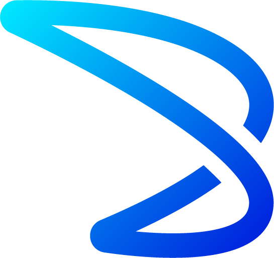
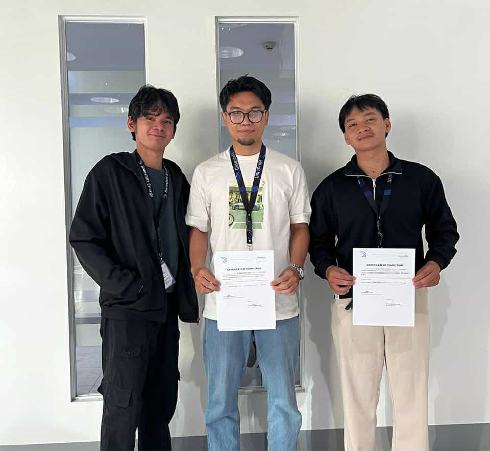
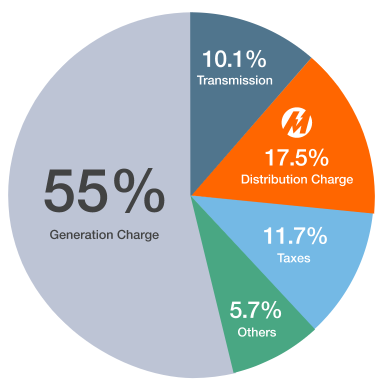
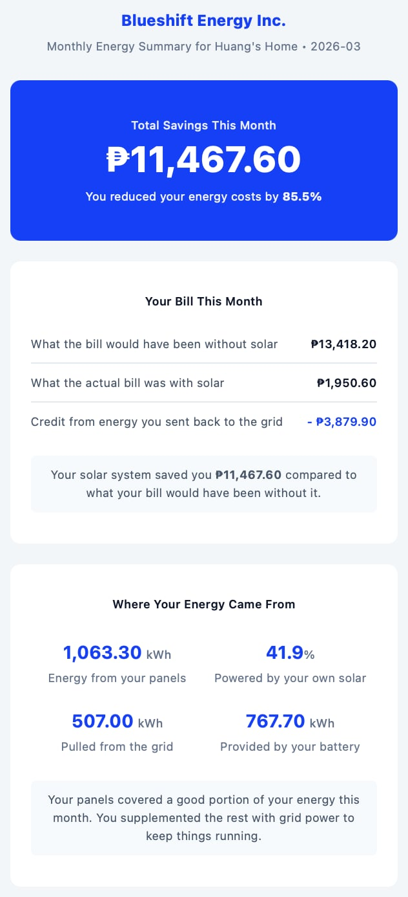
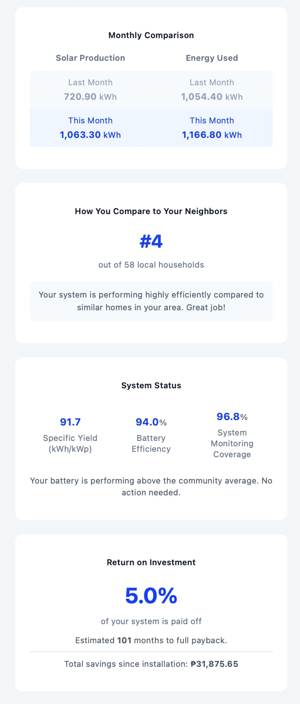

Student Profiles
Geovanny V. Portodo
Geovanny is a backend and data engineering practitioner whose strengths lie in building reliable data pipelines, designing database schemas, and integrating third-party APIs into production systems. Throughout his academic coursework, he developed a strong interest in how software systems process, store, and surface real-world data — an interest that the OJT experience at Blueshift allowed him to apply directly to a live solar monitoring platform.
During his training, Geovanny took ownership of several core subsystems within the Active Monitoring project: the Deye inverter API integration and normalizer, the MongoDB time-series schema design, the automated historical backfill orchestration pipeline, and the end-to-end monthly energy summary email system using Customer.io. He also built the tiered Meralco billing engine that dynamically resolves distribution charges based on a household's net consumption after solar offset.
Looking ahead, Geovanny aims to pursue a career in data engineering or backend platform development, with a particular interest in time-series analytics, cloud-native services, and building systems that translate raw sensor data into actionable business intelligence.
Marcus Kent R. Oliver
Marcus is a systems-oriented engineer with a focus on full-stack development, DevOps practices, and technical documentation. His academic background gave him a strong foundation in software architecture and data analysis, which he expanded significantly during his OJT by working on real production systems that serve paying customers.
At Blueshift, Marcus led the Solis inverter API integration, the dynamic panel estimation engine, the Meralco tariff PDF scraper and rate database, and the Odoo-to-MongoDB geospatial client-linking pipeline. He also spearheaded the project's technical documentation effort, producing Architecture Decision Records, system flow diagrams, and a comprehensive data dictionary that now serves as the onboarding reference for future developers.
Marcus plans to continue developing expertise in cloud infrastructure, data systems architecture, and developer tooling. His OJT experience demonstrated that production engineering demands not only writing working code, but also documenting decisions, hardening edge cases, and building systems that other engineers can confidently maintain.
Company Profile

Blueshift is a Philippine solar energy company that provides end-to-end residential and commercial photovoltaic solutions — from system design and installation to post-installation monitoring and performance analytics. Operating in the renewable energy sector, Blueshift serves homeowners, commercial building operators, and property managers who have invested in rooftop solar systems and need reliable visibility into their energy production, consumption, and financial savings. The company's core services include PV system design, hardware installation, real-time inverter monitoring, and operations and maintenance analytics delivered through automated monthly reports. The company is located at One Corporate Centre, Unit 3404, Ortigas, 1605 Metro Manila.
Our Team Assignment: We were assigned to the Active Monitoring engineering team under Sir Christian, Blueshift's technical lead for the monitoring platform. The Active Monitoring project is an internal software system that continuously collects inverter telemetry from multiple vendor APIs, detects faults and anomalies, computes financial savings against utility rates, and delivers automated performance reports to customers. Our team worked alongside other departments — coordinating with Sir Ian and the sales team for system configuration data, Sir Lester and operations for hardware verification, Ma'am Lady and Ma'am Moshi for CRM data validation, Ma'am Jessa for commissioning workflows, and Ms. Francheska for CRM system onboarding. Geovanny focused primarily on backend data pipelines, database schema design, and the customer-facing email reporting system, while Marcus concentrated on API integration hardening, panel estimation algorithms, utility tariff automation, CRM-to-telemetry data linking, and technical documentation.

By the Numbers
Background of Training Project
Active Monitoring is Blueshift's internal software platform for continuous solar inverter telemetry collection, fault detection, financial reporting, and customer communication. The system polls real-time data from multiple inverter vendor APIs every five minutes, normalizes the readings into a unified schema regardless of hardware brand, stores the telemetry in a time-series database, and runs detection algorithms to identify equipment faults, underperformance, and configuration issues.
The platform's main objectives during our OJT period were to: unify data collection across Solis and Deye inverter brands into a single consistent pipeline; migrate from Firestore to MongoDB Atlas for scalable time-series storage; build reliable automated backfill and summary aggregation pipelines; implement accurate financial reporting using real Meralco tariff data; and establish a CRM-to-telemetry data linkage so that business records could be connected to operational telemetry for ROI tracking.
These objectives directly support Blueshift's business goal of post-installation customer retention and operational efficiency — giving customers ongoing proof that their solar investment is performing as expected, while giving Blueshift's operations team early warning of hardware faults or configuration problems.
Geovanny V. Portodo — Primary Workstreams
Built the Deye API client and normalizer from scratch, handling authentication token management, device discovery, and the translation of Deye's proprietary field names into the project's unified telemetry schema.
Designed and implemented the flattened time-series schema used across all MongoDB collections, managing the migration from Firestore and executing a storage optimization that reduced the primary collection from over 500 MB to approximately 22 MB.
Developed the orchestrated backfill system that sequences month-by-month historical data fetching, runs aggregation, and implements verification-and-delete logic to safely remove raw telemetry after successful summarization.
Built the end-to-end email reporting system: MongoDB aggregation, Customer.io payload builder, and dispatch service with dynamic tiered billing, geographic benchmarking, and multi-scenario template support.
Led the transition from a device-centric to a plant-centric data model, grouping multiple inverters under a single plant entity for normalized billing and reporting.
Marcus Kent R. Oliver — Primary Workstreams
Built and maintained the SolisCloud API client and normalizer, resolving device fetch limits, unit conversion inconsistencies, and implementing strict five-minute boundary alignment for schema consistency.
Designed the panel estimation algorithm that infers installed panel counts from voltage telemetry using manufacturer-verified electrical specifications, with auto-selection of optimal voltage regime and P90 statistical aggregation.
Built the automated Meralco rate ingestion system with paginated HTML taxonomy crawling, PDF parsing using pdfplumber, dynamic header resolution, and orphaned PDF recovery.
Developed the geospatial matching engine using OpenStreetMap geocoding, Haversine distance calculation, and fuzzy name normalization to reconcile CRM records with telemetry plants.
Produced Architecture Decision Records, MongoDB ERD, system flow diagrams, data dictionary, security documentation, developer onboarding guides, and disaster recovery strategy.
OJT Timeline
-
Jan 6, 2026
OJT Start
Geovanny and Marcus begin their 500-hour OJT with Blueshift's Active Monitoring engineering team under Sir Christian.
-
Week 1 · Geovanny
Deye Cloud account & first backend pulling live telemetry
First task was setting up a Deye Cloud account, obtaining API credentials, and within days had a working backend pulling real-time telemetry from the vendor's servers.
-
Week 1 · Marcus
Solis API fetcher & environment restructure
Within the first week, restructured the project architecture to match Sir Christian's preferred approach and wrote the SolisCloud API fetcher that would become the backbone of the monitoring system's data collection.
-
Mid-OJT
Firestore → MongoDB Atlas migration
Migrated the entire data layer from Firestore to MongoDB Atlas using native Time-Series collections with flattened schemas — reducing primary telemetry storage by over 95%.
-
Mid-OJT
Backfill orchestration pipeline & Meralco PDF scraper
Backfill system sequences month-by-month historical data fetching with verification-and-delete logic. The Meralco scraper parses published rate schedules with dynamic header resolution and orphaned-PDF recovery.
-
Late OJT
Customer.io email pipeline & panel estimation fleet validation
End-to-end Customer.io transactional email pipeline with tiered billing and geographic benchmarking. Fleet-wide panel estimation validation exposed a 95.5% metadata incompleteness rate in the CRM.
-
Mar 30, 2026
OJT Complete
500 hours completed. The Active Monitoring platform now ingests multi-vendor telemetry, dispatches automated energy reports, and is fully documented for future developers.
Project Deliverables
Unified Solis/Deye Data Normalizer
Built two brand-specific normalizers that translate vendor-proprietary API responses into a single unified telemetry schema with consistent field names, units, and sign conventions. Enabled all downstream pipelines to operate brand-agnostically across the entire monitored fleet.
MongoDB Atlas Time-Series Migration
Migrated the entire data layer from Firestore to MongoDB Atlas using native Time-Series collections with flattened schemas optimized for aggregation queries. Reduced primary telemetry storage by over 95%.
Automated Backfill Orchestration Pipeline
Designed a controller script that sequences month-by-month historical data fetching, runs daily and monthly aggregation, and safely deletes raw telemetry after verified summarization. Supports concurrent processing and bulk database operations.
Current-Based Weak-String Detection Algorithm
Implemented a detection engine that identifies underperforming PV strings by comparing per-string DC current against dynamic thresholds, with inactive-string detection for zero-current strings between active indices.
Dynamic Panel Estimation Engine
Built an algorithm that infers installed panel counts per string from voltage telemetry using manufacturer specifications, with auto-selection of optimal voltage regime and P90 statistical aggregation. Validated against CRM ground-truth data.
Meralco Tariff PDF Scraper and Rate Database
Created an automated pipeline that crawls Meralco's published rate schedules, parses PDF charge tables using dynamic header resolution, and stores monthly rates in MongoDB. Includes orphaned PDF recovery and 14-month historical backfill.
Monthly Energy Summary Email System
Built the end-to-end pipeline from MongoDB aggregation through Customer.io transactional email dispatch, including dynamic tiered billing, geographic benchmarking, and dual-template support for battery and grid-tied systems.
Yearly Summary Pipeline and Email
Developed the yearly aggregation pipeline that rolls up monthly data into annual totals with month-by-month breakdowns, plus the corresponding email dispatch service.
Plant-Centric Database Architecture (V3)
Refactored the database from device-centric to plant-centric structure, grouping multiple inverters under single plant entities with normalized billing, pruning orphaned documents, and migrating all pipelines.
Odoo-to-MongoDB Geospatial Linking Engine
Developed a matching engine using OpenStreetMap geocoding, Haversine distance scoring, and fuzzy name normalization to reconcile CRM customer records with telemetry plants.
CT Error Alert System
Implemented measurement discrepancy detection between external CT sensors and inverter-internal readings using a percentage-threshold formula with a three-consecutive-reading rule to eliminate false positives.
Mixed-String Efficiency Analysis
Performed a comprehensive technical analysis quantifying efficiency loss due to unequal string configurations, including energy integration, panel-normalized comparison, and theoretical physics validation.
Dynamic Insights Engine
Designed a decoupled insights pipeline with behavioral, temporal/efficiency, and coverage-tier layers that generates personalized energy recommendations from telemetry data without hardcoded assumptions.
Technical Documentation Suite
Authored Architecture Decision Records, MongoDB ERD, system flow diagrams, data dictionary, security documentation, developer onboarding guide, and disaster recovery strategy.
Docker Containerization and Cloud Run Configuration
Created Dockerfiles for real-time polling and batch job containers, configured health check endpoints, graceful shutdown handling, and Cloud Run deployment parameters.
Collective Impact: Over the course of the OJT period, the combined work of both members transformed the Active Monitoring platform from a single-vendor, locally-run polling script into a multi-vendor, cloud-deployable data platform with automated financial reporting, fault detection, and CRM integration. The system now monitors dozens of inverters across multiple brands, automatically generates and dispatches monthly and yearly energy reports with accurate utility savings calculations, and maintains a documented, version-controlled architecture that can be extended by future team members.
Professional Learning and Development
Technical Growth
We entered our OJT with academic knowledge of programming, databases, and software development, but limited experience working on a system that runs in production and serves real customers. Over the course of roughly eleven weeks, we learned firsthand what it takes to build reliable data infrastructure: writing API integrations that handle timeouts and vendor quirks gracefully, designing database schemas that support both real-time ingestion and historical analytics, and deploying services to cloud platforms where uptime and data accuracy directly affect business outcomes.
Collaboration and Cross-Functional Coordination
Working under Sir Christian's technical leadership, we learned how engineering decisions are shaped by business context. We regularly coordinated with non-engineering teams: Sir Ian and the sales department provided system configuration data; Sir Lester and operations verified hardware configurations; Ma'am Lady, Ma'am Moshi, and Sir Prince helped validate CRM records; and Ma'am Jessa contributed to defining the plant commissioning workflow. These interactions taught us that building software for a company requires understanding how other departments use and depend on the data we produce.
Workplace Dynamics and Professional Standards
Code was reviewed by Sir Christian before merging, which taught us to write self-documenting, well-structured code and explain our design choices clearly. We learned to separate development and production databases, implement dry-run modes before bulk operations, and create backup strategies before destructive migrations. When things broke in production, we learned the discipline of diagnosing root causes and deploying targeted fixes rather than guessing and retrying.
Industry Practices
We wrote Architecture Decision Records to document why certain design choices were made. We implemented schema versioning so future engineers can trace how the data model evolved. We built observability features — like parser version tracking and schema drift detection — that are standard practice in production data systems but unfamiliar territory in school projects.
Geovanny — Distinct Growth Area
Geovanny's most significant professional growth was in data pipeline architecture and production reliability engineering. Building the Customer.io email pipeline taught him to negotiate between the structure of his database output and the rigid formatting requirements of an external platform — a real-world integration challenge that no classroom exercise had prepared him for.
Marcus — Distinct Growth Area
Marcus's most distinct area of growth was in systems-level thinking and technical documentation discipline. Designing the panel estimation engine forced him to bridge solar engineering physics with software engineering concerns. His documentation work developed a skill that is often undervalued in academic settings but indispensable in professional engineering: the ability to communicate complex technical decisions clearly and durably.
Techniques, Skills, and Tools
Techniques and Methodologies
Fetch-normalize-store pattern abstracting vendor-specific API behaviors behind a common interface.
Reconciling structurally different data sources into a single canonical schema with consistent units and conventions.
MongoDB native Time-Series collections with metadata tags and flattened metrics optimized for aggregation.
Export-drop-reimport, dry-run verification, backup creation, and zero-downtime index swapping.
Docker containers configured for Google Cloud Run with health checks and graceful shutdown handling.
Geocoding, Haversine distance calculation, and fuzzy string matching to reconcile records across systems.
P90 percentile aggregation of voltage data combined with manufacturer specs to infer hardware configurations.
Documenting design choices with context, alternatives considered, and rationale for future contributors.
Tools and Software
Professional Skills
Translating technical findings into language appropriate for sales, operations, and management audiences.
Systematic diagnosis of field mapping inconsistencies, rate limiting, and undocumented response variations.
Maintaining multiple active workstreams simultaneously with clear prioritization.
Producing system documentation for long-term use, documenting the "why" behind decisions.
Owning specific subsystems end-to-end from design through production deployment.
Technology Stack
Discipline-Related Solutions
1. Unified Multi-Vendor Data Normalization
Blueshift's monitored fleet includes inverters from multiple manufacturers, each exposing telemetry through proprietary APIs with different authentication schemes, field naming conventions, unit standards, and data structures. Without normalization, every downstream feature would need brand-specific logic, creating an unmaintainable codebase.
We designed a fetch-normalize-store architecture where each vendor has a dedicated API client and normalizer module, but all normalizers output an identical schema structure with consistent field paths, standardized units, and a single connection status indicator. A formal Data Dictionary documents every field as the contract between ingestion and analytics layers.
Geovanny built the Deye normalizer and client, handling token-based authentication, device discovery with caching, and request chunking. Marcus built the Solis normalizer and client, resolving the 20-device fetch ceiling, fixing unit conversion inconsistencies, and preserving cumulative production values during nighttime offline periods. Both normalizers include safeguards: request timeouts, offline-device filtering, and voltage-based string filtering.
The system now ingests telemetry from dozens of inverters across two brands into a single consistent data stream. All downstream pipelines operate without any knowledge of which vendor manufactured the underlying hardware. Adding a third vendor would require only a new client and normalizer conforming to the existing schema contract.
2. Firestore to MongoDB Atlas Migration
The original data layer used Google Firestore with an array-bucketing model where each device document contained a growing array of timestamped readings. Document size limits constrained history storage, the emulator became unusably slow, and Firestore's query model made time-range aggregation difficult and expensive.
We migrated to MongoDB Atlas using native Time-Series collections, purpose-built for high-volume timestamped data. Each five-minute reading became an independent document tagged with device metadata, aligned with MongoDB's automatic bucketing, compression, and time-range indexing. The schema was simultaneously flattened for cleaner queries.
Geovanny designed the flattened schema and handled bulk data migration, including an export-drop-reimport operation that reduced the primary collection from approximately 514 MB to 22 MB. Marcus refactored the core polling engine and backfill scripts, aligned all timestamps to strict five-minute boundaries, and implemented a separate development database. Both members updated all dependent scripts to work with the new data model.
The migration eliminated the storage scaling problem, reduced database costs, and unlocked MongoDB's aggregation framework for building the summary pipelines that power customer-facing email reports. Query performance improved substantially for time-range operations.



3. Automated Meralco Tariff Parsing and Tiered Billing
Blueshift's monthly energy reports require accurate, up-to-date Meralco distribution charge rates, which are published monthly as PDF documents with varying table layouts, multi-row headers, and occasional category reorganizations. Previously, rates were entered manually, which was slow, error-prone, and created gaps in historical data.
Marcus built a fully automated tariff ingestion pipeline that discovers new rate schedules, downloads the PDFs, parses the charge tables, and stores structured rate data in MongoDB. Geovanny integrated these rates into the monthly summary pipeline with a tiered billing resolver that recalculates baseline and actual Meralco bills using the correct distribution rate brackets.
The scraper crawls Meralco's published rate taxonomy with exponential backoff for rate limiting. For each schedule, it downloads the PDF and applies pdfplumber with a multi-row header mapping algorithm to extract individual charge fields. The parser includes schema drift detection and an orphaned-PDF recovery mechanism. The parsed rates feed into the tiered billing engine that determines the correct distribution bracket based on post-solar net consumption.
The system maintains a complete, machine-readable database of Meralco rates covering over fourteen months, updated automatically. Financial savings in customer reports are calculated from verified tariff data, and the tiered billing logic correctly reflects how solar self-consumption shifts a household into lower distribution rate brackets.
OJT Reflection
Geovanny V. Portodo
from writing code that satisfies technical requirements to building a product that communicates with non-technical humans
When I started at Blueshift on January 6, 2026, the Active Monitoring project existed mostly as a concept and a handful of exploratory scripts. My first task was setting up a Deye Cloud account, obtaining API credentials, and confirming that I could fetch live inverter data from the vendor's servers. Within days, I had a working backend pulling real-time telemetry — and within a week, I was deep into Python, designing a unified schema that could hold data from both Deye and Solis inverters in the same structure. The pace of the work surprised me. In school, projects unfold over weeks with defined checkpoints. Here, I was writing code on Monday that needed to be running correctly in production by Friday, because real customers depended on the data it produced.
The biggest challenge I faced was building the backfill orchestration pipeline. The concept sounds straightforward — fetch historical data from vendor APIs and store it — but the implementation was full of edge cases: APIs that return partial data for certain months, monthly summaries that depend on daily summaries that depend on raw telemetry, storage limits that require safe deletion of raw records after aggregation, and the need to handle concurrent fetching for both Solis and Deye without corrupting shared state. The pipeline eventually became one of the project's most critical components.
My most meaningful personal growth came from owning the Customer.io email pipeline end to end. This was not just a technical challenge — it required coordinating with Sir Christian on payload structure, working with marketing on template design, understanding how Meralco's tiered billing actually works, and building a benchmarking system that compares a customer's solar performance against their geographic peers. That shift in perspective — from writing code that satisfies technical requirements to building a product that communicates with non-technical humans — was the most important lesson of my OJT.
This experience confirmed that I want to work in data engineering and backend systems. As a BS Computer Science student, I had a theoretical understanding of databases and distributed systems, but this OJT gave me direct, tangible experience building them for production use. I intend to carry this experience into my career — looking for roles where I can build the data infrastructure that powers products people rely on.
Marcus Kent R. Oliver
real engineering work begins with debugging someone else's environment, not writing elegant code from scratch.
My first day at Blueshift was spent setting up my development environment and immediately encountering problems — ES module issues, configuration conflicts, Git access errors on macOS. It was a humbling start. But within the first week, I had restructured the project architecture to match Sir Christian's preferred approach, set up the Python backend with Firestore, and written the SolisCloud API fetcher that would become the backbone of the monitoring system's data collection. Looking back, that initial friction taught me something valuable: real engineering work begins with debugging someone else's environment, not writing elegant code from scratch.
The most complex challenge I tackled was the dynamic panel estimation engine. The problem required me to bridge two completely different domains: solar panel physics and software engineering. When I ran the first fleet-wide validation, the results exposed a 95.5% metadata incompleteness rate in the CRM — meaning the algorithm was technically correct, but the business data needed to validate it did not exist for most sites. That discovery shifted my work from pure engineering toward data governance, teaching me that even the best algorithm is useless if the supporting data infrastructure is not in place.
My strongest area of personal growth was in technical documentation and architecture formalization. Before this OJT, I viewed documentation as an afterthought. At Blueshift, Sir Christian's expectation was that design decisions should be recorded while they are being made. I ended up producing the project's Architecture Decision Records, Entity-Relationship Diagrams, system flow visualizations, a comprehensive data dictionary, security documentation, and a developer onboarding guide. I now consider documentation a core engineering skill, not an administrative burden.
This OJT fundamentally shaped my understanding of what production software engineering looks like. In school, success means passing test cases. In production, success means building systems that other engineers can understand, extend, and trust. As I complete my BS Computer Science degree, I am confident that the skills and discipline I developed at Blueshift will serve as the foundation for my career in software platform engineering or data systems architecture.